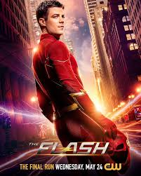

| Página 1 | Página 2 | Página 3 | index |
The Flash
The Flash es una serie de televisión basada en el personaje de DC Comics, Barry Allen, un investigador forense que adquiere supervelocidad tras ser alcanzado por un rayo durante un accidente en los laboratorios S.T.A.R. Con sus nuevos poderes, Barry se convierte en el superhéroe conocido como Flash y jura proteger Central City de criminales y metahumanos, personas que, como él, han desarrollado habilidades extraordinarias debido a la explosión del acelerador de partículas.

A lo largo de sus nueve temporadas, la serie sigue las aventuras de Barry mientras enfrenta a enemigos poderosos como Reverse-Flash, Zoom y Savitar, entre otros. Con la ayuda de su equipo en S.T.A.R. Labs, compuesto por Caitlin Snow, Cisco Ramon y Harrison Wells, Flash aprende a dominar sus habilidades y a viajar a través del tiempo y el multiverso, enfrentando constantemente dilemas sobre el destino, la familia y la responsabilidad que conlleva su poder. Además, su relación con Iris West, su amor de infancia, juega un papel fundamental en su desarrollo personal y heroico.

Lo que hace especial a The Flash es su combinación de acción, emoción y ciencia ficción, con tramas que exploran temas como la identidad, el sacrificio y las segundas oportunidades. Con un tono dinámico y momentos de humor, la serie ha sido una de las más exitosas del Arrowverse, ofreciendo a los fanáticos de los superhéroes una historia llena de giros inesperados, cameos de otros personajes de DC y una evolución constante del protagonista en su camino para convertirse en el hombre más rápido del mundo.